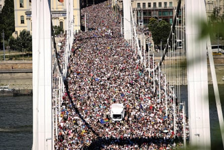
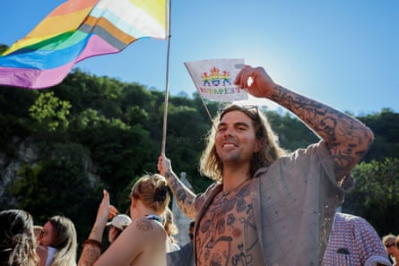

Tens of thousands of people have taken to the streets of Budapest in defiance of the Hungarian government’s ban on Pride , heeding a call by the city’s mayor to “come calmly and boldly to stand together for freedom, dignity and equal rights”.
Jubilant crowds packed into the city’s streets on Saturday, waving Pride flags and signs that mocked the country’s prime minister, Viktor Orbán , as their peaceful procession inched forward at a snail’s pace.
Organisers estimated that a record number of people turned up, far outstripping the expected turnout of 35,000-40,000 people. “We believe there are 180,000 to 200,000 people attending,” the president of Pride, Viktória Radványi told AFP. “It is hard to estimate because there have never been so many people at Budapest Pride.”
The mass demonstration against the government was a bittersweet marking of Budapest Pride’s 30th anniversary; while the turnout on Saturday was expected to reach record levels, it had come after the government had doubled down on its targeting of the country’s LGBTQ+ community.
Hungary Pride participants in the march cross the Elisabeth Bridge in Budapest, Hungary.Photograph: Rudolf Karancsi/AP
“We came because they tried to ban it,” said Timi, 49. The Hungarian national was marching with her daughter, Zsófi, 23, who had travelled from her home in Barcelona to join the rally.
After the ruling Fidesz party, led by the rightwing populist Orbán, fast-tracked a law that made it an offence to hold or attend events that involve the “depiction or promotion” of homosexuality to minors, many Hungarians vowed to show their disapproval by attending Pride for the first time.
Viki Márton was among those who had made good on the promise, turning up with her nine-year-old daughter.
The pair had come equipped with hats, water spray, and a swimsuit, more worried about heat than rightwing protesters. “I want her to see the reality,” said Márton. “And I’m so excited to be here!”

Tens of thousands of Hungarians took to the streets on Saturday, despite Orbán’s warning on Friday that those who attend or organise the march will face ‘legal consequences’.Photograph: János Kummer/Getty Images
Earlier this month, police announced they would follow the government’s orders and ban the march. The progressive mayor of Budapest, Gergely Karácsony, was swift to respond, saying that the march would instead go ahead as a separate municipal event, with Karácsony describing it as a way to circumvent the need for official authorisation.
On Saturday, the mayor reiterated why the city had decided to host the event, hinting at how the march had become a symbol of discontent against a government that has long faced criticism for weakening democratic institutions and gradually undermining the rule of law.
“The government is always fighting against an enemy against which they have to protect Hungarian people,” said Karácsony.
“This time, it is sexual minorities that are the target … we believe there should be no first and second class citizens, so we decided to stand by this event.”
Akos Horvath, 18, who had travelled two hours from his city in southern Hungary to take part in the march, described it as an event of “symbolic importance”.
Speaking to news agency AFP, he added: “It’s not just about representing gay people, but about standing up for the rights of the Hungarian people.”
The sentiment was echoed by fellow marcher Eszter Rein-Bódi. “This is about much more, not just about homosexuality,” Rein-Bódi told Reuters “This is the last moment to stand up for our rights.”

‘This is about much more, not just about homosexuality,’ one participant told Reuters.Photograph: Lisa Leutner/Reuters
Tens of thousands of Hungarians, including senior citizens and parents with their children, plus politicians and campaigners from 30 countries, took to the streets on Saturday, despite Orbán’s warning on Friday that those who attend or organise the march will face “legal consequences”.
The Hungarian prime minister sought to minimise concerns over violence, however, saying that Hungary was a “civilised country” and police would not “break it up … It cannot reach the level of physical abuse”.
Still, in a video posted to social media this week, the country’s justice minister, Bence Tuzson, warned the Budapest mayor that organising a banned event or encouraging people to attend is punishable by up to a year in prison.
Speaking to reporters on Friday, the mayor brushed off the threat and downplayed concerns that police would later impose heavy fines on attende s. “Police have only one task tomorrow: to guarantee the safety and security of those gathered at the event,” said Karácsony.
The potential for violence had been amplified after three groups with ties to the extreme right said they were planning counter-marches. As the Pride march got under way, local news site Telex reported that the route of the march had to be changed after one of these groups blocked off a bridge.
Analysts had described the government’s bid to crackdown on Pride as part of a wider effort to curb democratic freedoms ahead of a hotly contested national election next year.
Orbán is facing an unprecedented challenge from a former member of the Fidesz party’s elite, Péter Magyar, leading Pride organisers to suggest they are being scapegoated as Orbán scrambles to shore up support among conservative voters.
Orbán’s government had also prompted concerns across Hungary and beyond after it said it would use facial recognition software to identify people attending any banned events, potentially fining them up to €500 (£425).
Ahead of the march, as campaigners scrambled for clarity on whether or how this technology would be used, AFP reported that newly installed cameras had appeared on the lamp-posts that dotted the planned route.
The threat had been enough to rattle some. Elton, 30, a Brazilian living in Hungary wore a hat and sunglasses as he took part on Saturday, explaining that he had been worried about jeopardising his job and immigration status, but that his Hungarian boyfriend had persuaded him to attend.
“This is my second time at Pride, but the first time I feel insecure about it,” he said.
Orbán’s government had also prompted concerns across Hungary and beyond after it said it would use facial recognition software to identify people attending any banned events.Photograph: Lisa Leutner/Reuters
Mici, a 21-year-old Budapest resident, said she had attended Pride marches in the past but this time had weighed whether to join in after she was spooked by reports of the facial recognition system.
“At first, I was scared to come out because of the news, but I feel safe with so many people.”
She hoped that the massive turnout for the march would be enough to push the Orbán government to change its stance.
“I think the crowd that has come from across Europe , the record numbers, will make Hungarian people see that this cause is well-supported.”